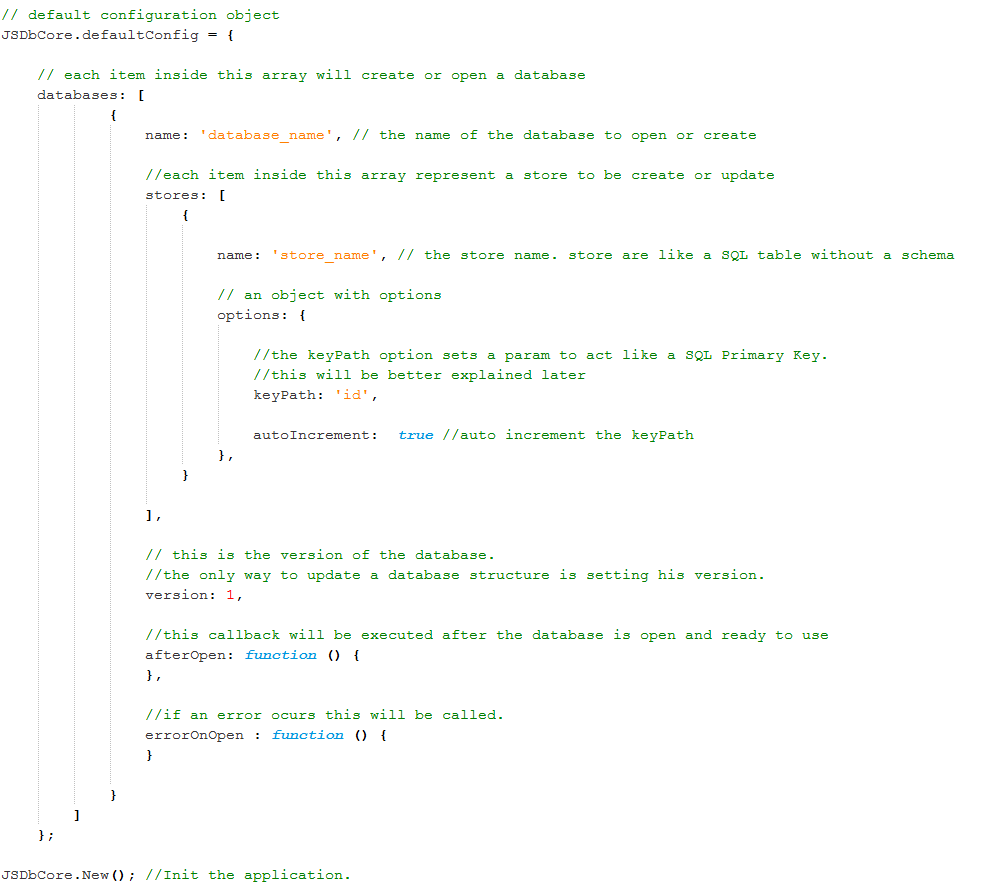
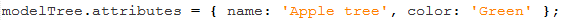
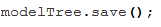

This is a beginners guide to help you setup your client-side database, based in the IndexedDb and WebSQL Html5 Api’s.
This library implements helpers that simplify current requests in a database like inserting a record, advanced find conditions, delete and other functionalities.
The first thing you have to do is include the JSDbCore in your application.
To do this in a standard web/html app, include the following code in your <head> section:
This code will load the JSDbCore library in your app.
2. Config the database:
To setup JSDbCore, you just need to define some configs in a javascript object.
See the code and the explanation bellow:

Explain step by step:
JSDbCore has an object called ‘defaultConfig’, where you can configure all your databases, stores (its like SQL ’Tables’), indexes, version control, events, and all other stuff that will be explained later in this guide, for now this is a standard configuration.
Lets see what is in this configuration...
First, an array called ‘databases’. In the databases array, each object represent a instance that will be initialized when JSDbCore is started. This configure just one database, so there is just one item inside the array.
This object has an attribute ‘name’ that is the database name
Later db object has an array attribute called stores. The store is the location where the data is placed,
like a collection or an ‘table’ without a predefined schema, you have to define a name to the store and a options object, setting the keyPath that is like an Primary key in standard SQL, and others options like autoIncrement. There is more advanced features that will be explained later like indexes.
After this has a version attribute. Short explanation: the version is the version of your database,
but this isn’t his only purpose, the only way to change the stores configuration on the database is changing your version.
And now the events:
- afterOpen: a function to executed after the database is open and ready to use.
- erroOnOpen: this will be executed if there is an error on opening the database.
Additional attributes:
- overwrite: this flag prevents to overwrite your stores when the version of the database is changed and the stores will be updated, false will overwrite your stores.
- type: type of database, ‘indexeddb’ (default) | ‘websql’
For more informations about this databases, see:
Indexeddb(default) https://developer.mozilla.org/en-US/docs/IndexedDB
WebSQL: http://html5doctor.com/introducing-web-sql-databases/
Now that we have our configuration, lets initiate the JSDbCore:
JSDbCore.New();
This will instantiate all the databases and call one of the callbacks passed in the configuration.
3. Model (saving, searching, etc)
What is a model?
A model is an object that represents a record in the database.
In the model we have the ways to handle with the data, like: saving, finding, deleting, and other advanced options like finding with a specified criteria.
Creating a model is easy, let's suppose that you have a database named ‘Forest’, and inside there is an store called ‘Trees’, now we want to add some trees especies, the first thing to do is create a new model called ‘modelTree’, passing the database and the store.
See this code:
Now we have a model to represent a record on the store ‘Trees’, but we have to add some informations about this tree, so we will do this:

We set the new record with two attributes: a name and a color.
So this mean that this record represent an Apple tree and the color of this tree is green.
After this steps. just save this record in the database. Do this:

The new record will be saved in the store ‘Trees’ in the ‘Forest’ database.
//This documentation is not finished here come the advanced criterias section